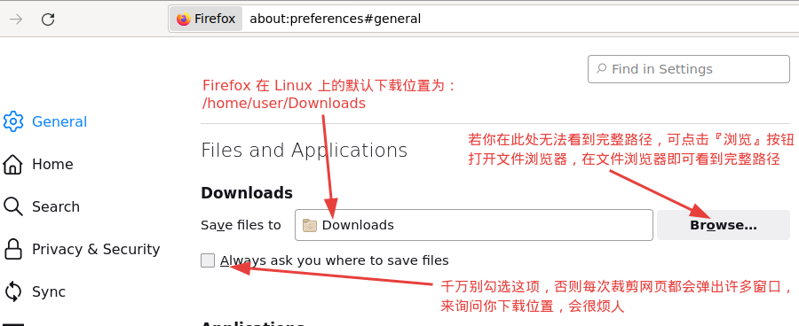

前言
本文以图文的形式，详细地介绍如何使用 MaoXian 这款浏览器扩展，把网络上的文章以 Markdown 的格式保存到 Obsidian 的库里面。本教程特别适用于喜欢本地存储大于云存储的 Obsidian 用户。
注：本文以 Linux 系统为对接环境，不同的操作系统的对接略有差异，但整个对接思路和流程是一致的，请参照各个对接步骤灵活变通。
MaoXian 网摘简介
MaoXian 是一个简洁的网摘扩展，它专注于一个核心功能：把网页上的信息保存到你的本地电脑上，以避免网站挂了，网址失效，图片失效等问题。它支持把网页上的文章以 Markdown 的格式裁剪下来，并且同时把文章对应的图片下载下来。另外，MaoXian 的存储结构和 Obsidian 一样简单，都是以文件夹和 Markdown 文件的形式存储在你本地的电脑里，这种不谋而合的设计使得它们可以很好地配合在一起。
MaoXian 是一款纯绿色的开源软件，你不需要创建任何帐号即可使用。并且它不会收集任何个人信息，你可以在这里查看它的隐私说明。
对接思路
由于 Obsidian 和 MaoXian 的存储都是用本地文件夹 和 Markdown 文件，而且 Obsidian 会自动识别库文件夹里面的 Markdown 文件。所以只要把 MaoXian 存储位置设置成 Obsidian 库里面的某个文件夹就可以把它们对接起来。
两种对接方法的选择
- 方法A ： 选用『浏览器』作为存储操作的处理程序，并通过创建软链接（传送门）的方式修改 MaoXian 的存储位置。
- 方法B ： 选用『本地程序』作为存储操作的处理程序，并通过修改『本地程序』的配置文件来修改 MaoXian 的存储位置。
如果你的浏览器安装了一个管理下载的扩展，或者是你的浏览器本身就开发了特有的下载管理功能，那么当 MaoXian 叫浏览器去下载某个文件的时候，这个下载请求可能会被这些下载功能拦截到，并且要保存的文件名也可能会被改掉。这会导致 MaoXian 根本无法使用浏览器来下载文件。
你可以到扩展的 设置 > 浏览器 页面，点击 『测试』按钮，来测试浏览器能否正常处理 MaoXian 发出的下载请求。如下图，表明你可使用『方法A』来对接 Obsidian。
如果你测试后，发现下载请求被拦截，那么你可以找出到底是哪个扩展拦截的，还是浏览器本身拦截的。你可以选择换掉它，或者向它的开发者反馈这个问题。如果你实在无法避免这种下载冲突， 才需要使用『本地程序』来绕过浏览器的下载功能，即使用本文中的『方法B』来对接 Obsidian。
对接流程
请按照文档顺序，选择适用你的步骤进行操作。
【注意】，并不是每个步骤都需要执行，每个步骤标题后面都会标识该步骤所适用的方法
标识说明：
【A】 ：表明该步骤，只有选用『方法A』 的用户才需要执行。【B】 ：表明该步骤，只有选用『方法B』的用户才需要执行。【AB】：表明该步骤，两种对接方法都适用，都需要执行。
（1）安装和配置 Obsidian 【AB】
如果你还没有安装 Obsidian，可到官网下载软件包并安装。然后确保你已经有一个 Obsidian 库，然后在这个库里面创建一个用于保存网页文章的文件夹。在本文中我们的 Obsidian 库的名字叫 ob-notes，这个专门用于保存网页文章的文件夹叫 web-clippings ，为了方便，我们称其为 Obsidian 的网摘入口，配置好后，如下图：
接下来我们需要知道这个网摘入口的文件路径，你可以右击它，点击『在系统资源管理器中显示」后，Obsidian 会打开文件管理器，然后通过点击，进入到『网摘入口文件夹』内部，此时文件管理器上的文件路径就是我们要的路径。如下图：
通过点击，进入到网摘入口文件夹内部，如下图，红框选中的部分，就是网摘入口的路径：
此时我们得到了两个文件夹的路径：
- Obsidian 库：
/home/user/Documents/ob-notes - 网摘入口 ：
/home/user/Documents/ob-notes/web-clippings。
注： Windows 系统的文件路径是以盘符开头和以\分隔的，和上方很不一样。Windows 用户会得到类似 D:\Users\jack\Documents\ob-notes\web-clippings 的路径，下文不再赘述。
（2）安装 MaoXian 网摘【AB】
Firefox （火狐）浏览器，请到 火狐扩展中心 进行安装。
Chromium （谷歌浏览器社区版） 或 Chrome （谷歌浏览器）或其他以 Chromium 为核心开发的浏览器 （如： Edge 浏览器）。由于 MaoXian 网摘这款扩展没有上架谷歌浏览器商店，所以需要手动安装它。安装方式请看 通过下载扩展文件的方式来安装 MaoXian
安装成功后，它会自动弹出一个欢迎页面，不要把它关掉。按照它的提示，关闭浏览器的『每次下载都询问保存位置』。因为 MaoXian 使用的是浏览器的下载功能来保存文件，如果这个设置没有关闭，每次裁剪都弹出好多个窗口询问你保存位置，窗口打击很疼的。
而第二点「允许 MaoXian 访问本地路径」我们不需要做，因为我们要使用 Obsidian 来管理这些裁剪下来的文章，就不需要用浏览器来查看了。完成后关掉欢迎页面。
这是 Firefox 上，MaoXian 的欢迎页面，供参考：
（3）简单配置 MaoXian 网摘【A】
【注意】： 该步骤，只有选用『方法A』 的用户才需要执行。
为了更好地把重心放在对接上，此时，我们只进行一些基础配置。点击浏览器工具栏上的 MaoXian 图标，再进入 设置 > 存储设置。
- 配置处理程序为『浏览器』
- 配置保存格式为 『Markdown』
- 配置根目录为
mx-wc
参考下图：

（4）拿到浏览器默认的下载路径【A】
【注意】： 该步骤，只有选用『方法A』 的用户才需要执行。
在你的浏览器设置里面，找到浏览器的默认下载路径，这个路径后面要用到。
作为参考，我得到的路径为：/home/user/Downloads，如下图：

（5） 创建传送门【A】
【注意】： 该步骤，只有选用『方法A』 的用户才需要执行。
这是最关键的一步，在这一步中，我们要把 MaoXian 默认存储位置设置成 Obsidian 库里面的网摘入口（在第一步里创建的那个文件夹）。方法为创建传送门，你将需要以下信息：
- MaoXian 的根目录。我们使用的是默认值，即
mx-wc。 - 浏览器的默认下载路径。这个在上一步骤中已经拿到，我拿到的是
/home/user/Downloads。 - 目标路径。这个是网摘入口的路径，我们在第一步中已经拿到，我拿到的是
/home/user/Documents/ob-notes/web-clippings
有了上方的三个信息，你可以通过点击下方的连接，按照 MaoXian 给出的文档，创建传送门。
请保持耐心，这可能看起来很复杂，但做起来很简单。你将学会『创建传送门』这个很有用的技能。
点我查看：如何通过创建传送门，修改 MaoXian 的默认存储位置
作为参考，我需要创建的传送门为：/home/user/Downloads/mx-wc ，这个传送门的目标路径为 /home/user/Documents/ob-notes/web-clippings。在 Linux 上的创建命令为：
ln -s /home/user/Documents/ob-notes/web-clippings /home/user/Downloads/mx-wc
执行效果如下图：
成功创建后，每次我用 MaoXian 裁剪网页，它都会把文件保存进传送门，然后所有的文件就被传送到目标路径，即传送到 Obsidian 的网摘入口文件夹里面。
（3）简单配置 MaoXian 网摘【B】
【注意】： 该步骤，只有选用『方法B』 的用户才需要执行。
为了更好地把重心放在对接上，此时，我们只进行一些基础配置。点击浏览器工具栏上的 MaoXian 图标，再进入 设置 > 存储设置。
- 配置处理程序为『浏览器』，（我们得等到安装和对接好『本地程序』才能回来选择『本地程序』作为处理程序）
- 配置保存格式为 『Markdown』
- 配置根目录为
web-clippings（注：参考值，这个值必须和前面的 Obsidian 的网摘入口的名字一样）
参考下图：
（4） 安装并配置『本地程序』【B】
【注意】： 该步骤，只有选用『方法B』 的用户才需要执行。
请按照 本地程序文档 进行安装和配置，在配置那一步，把存储目录设置为 Obsidian 库的路径（你已经在本教程的步骤（1）中得到这个路径）
以我在步骤（1）中拿到的 Obsidian 库路径 /home/user/Documents/ob-notes 为例，我的 config.yaml 文件的内容如下：
environment: 'production'
data_dir: '/home/user/Documents/ob-notes'
msg_handler: 'default'
对接上后，启用它，状态如下图：
（5）选用『本地程序』来保存文件【B】
【注意】： 该步骤，只有选用『方法B』 的用户才需要执行。
我们在步骤（3）中，暂时没有设置『本地程序』为处理程序。现在『本地程序』已经对接上并且启用了，就可以把存储设置中的处理程序选为『本地程序』了，如下：
由于我们在步骤（3）中，把 MaoXian 的存储根目录配置成 web-clippings ，所以当 MaoXian 扩展请求『本地程序』保存文件时，这些文件就会存储在 /home/user/Documents/ob-notes/web-clippings 这个目录下。即保存在了 Obsidian 的网摘入口文件夹里面。
（6）裁剪测试 【AB】
由于 Obsidian 会自动识别 Markdown 文件，所以能在 Obsidian 上直接看到由 MaoXian 保存过来的 Markdown 文件。你现在就可以找一个网页裁剪试试，看能否在 Obsidian 上看到裁剪下来的文件 ，你将会看到一个新的 markdown 文件，叫 index。
下图是我的测试结果，在表单那一步，我填写了分类 test 。
在文件系统上查看，MaoXian 默认的存储结构，如下图：
到这里整个对接流程已经结束。我们已经把 MaoXian 网摘和 Obsidian 对接了起来，并完成对其的测试，也对 MaoXian 默认的存储结构有了一个初步的了解。你可以就此打住，或者去细配置 MaoXian 的存储路径、Markdown 模板 和 Markdown 格式。若要接着配置，请查看下一章节。
配置 MaoXian 的存储路径
由于每个人的需求都不一样，所以很难列举出所有不同的设置。在本章节里，我们会用一个例子，作为参考，读者可灵活变通，配置出自己想要的存储结构。
MaoXian 支持你很灵活地配置各种类型文件的存放路径，只要这些路径都以『MaoXian 的根目录』打头就行，即所有裁剪下来的文件都必须存储在『根目录』下。
从存储设置页面，你可以了解到 MaoXian 的默认存储路径是这样构成的：
下载路径 / 根目录 / 分类目录 / 裁剪目录 / 文件名
其中：
下载路径是指你选用的处理程序的默认下载路径，即浏览器的下载目录或『本地程序』里配置的下载目录。分类目录和裁剪目录是可选的，你可以配置各个路径，使其不包含这些可选的目录，或者只包含一个，或者都包含。
注： 许多路径相关的设置项都允许你使用变量，你可以点击相关的『可用变量』进行查看，利用变量和存储路径各部分的组合，可以很灵活地配置你的存储结构，但有一点要提醒读者的是：你配置的存储结构要避免发生文件覆盖的情况。
我们将配置下方的存储结构
~/Documents/ob-notes/web-clippings $ tree
.
└── read-later
└── 20230529_测试博客功能_1685369680
├── assets
│ └── 5f05cab82dc67034430a15a011750962.png
└── index.md
各部分解释如下：
read-later是分类目录，此例中，使用的是默认目录20230529_测试博客功能_1685369680是裁剪目录，其中20230529为当前日期信息，测试博客功能为标题，1685369680为时间戳（可以避免文件覆盖）。index.md为主文件assets为存储图片的文件夹5f05cab82dc67034430a15a011750962.png为图片文件
该存储结构的特点为：
- 每个裁剪下来的网页的全部文件，都会存于裁剪目录中，你可以随便移动该裁剪目录，而无需更新 md 文件里面的链接。
- 文件路径自带日期和标题，日期可用于按名字排序，标题可方便浏览。
- 图片统一保存在 assets 文件夹下，在浏览时可迅速定位到 md 文件。
配置默认分类
不管你要配置的存储路径包不包含 分类目录，配置『默认分类』都很有必要。我们推荐你都配置它，
下图中，我们把它的值配置为 read-later 。
配置裁剪目录
裁剪目录配置为 $YYYY$MM$DD_$TITLE_$TIME-INTSEC，如下图：
配置主文件
主文件保持不变，使用默认值，如下图：
配置资源文件
资源文件（即图片文件），修改文件名为 $MD5URL$EXT 因为我们在『裁剪目录』上已经加了时间戳，所以这里去掉。如下图：
配置内嵌的网页文件
我们的保存格式为 Markdown， MaoXian 会自动把这些内嵌网页文件嵌入到主 Md 文件里，所以该项不需要配置，保持默认值就好。
配置元信息文件
这个文件记录着本次裁剪的元信息，示例内容如下，如果你确定以后都用不到这些元信息，则可以不保存该文件。保存该文件的好处是：方便其他程序识别和处理这些裁剪下来的文件。
{
"version": "2.0",
"clipId": "1685345270",
"format": "md",
"title": "测试博客功能",
"link": "http://dev.pc:3000/blog/other/2016/01/01/test-blog-feature.html",
"category": "test",
"tags": [
"标签A",
"标签B"
],
"created_at": "2023-05-29 15:27:50",
"mainPath": "index.md",
"paths": [
"index.json",
"a-title_测试博客功能",
"assets/1685345270-5f05cab82dc67034430a15a011750962.png",
"index.md"
]
}
配置标题文件
这个文件只是为了在文件系统里起标识作用，如果你的 markdown 文件的存储路径，将包含标题信息。则建议不要保存该文件。如图：
到此，我们的示例存储结构就配置好了，希望你可成功配置你的存储结构 :)
配置 Markdown 模板与格式
你可以在 设置页面 > Markdown 里设置 Markdown 的模板与格式。由于每个人的需求不同，我个人只配置了 YAML Front Matter。下面是我的 Markdown 模板，供参考：
---
标题: {{title}}{{^title}}无标题{{/title}}
源网址: {{url}}
时间: {{createdAt}}
分类: {{category}}{{^category}}未分类{{/category}}
标签: {{#tags}}
- {{.}}{{/tags}}{{^tags}}
- 无{{/tags}}
---
{{content}}
Markdown 格式，请自行配置，设置页面已经展示得很清楚。